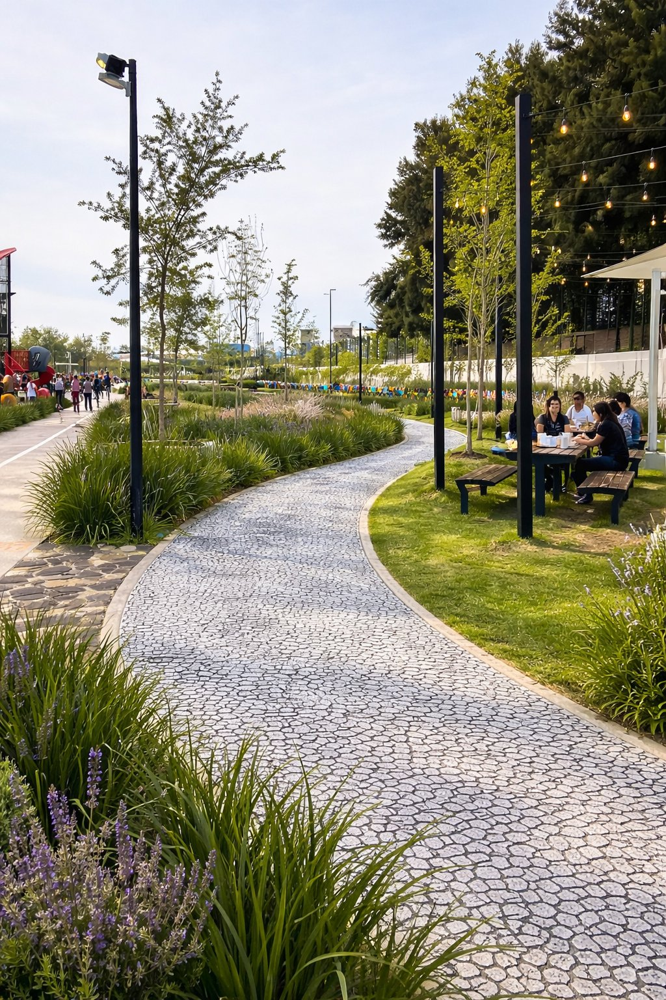
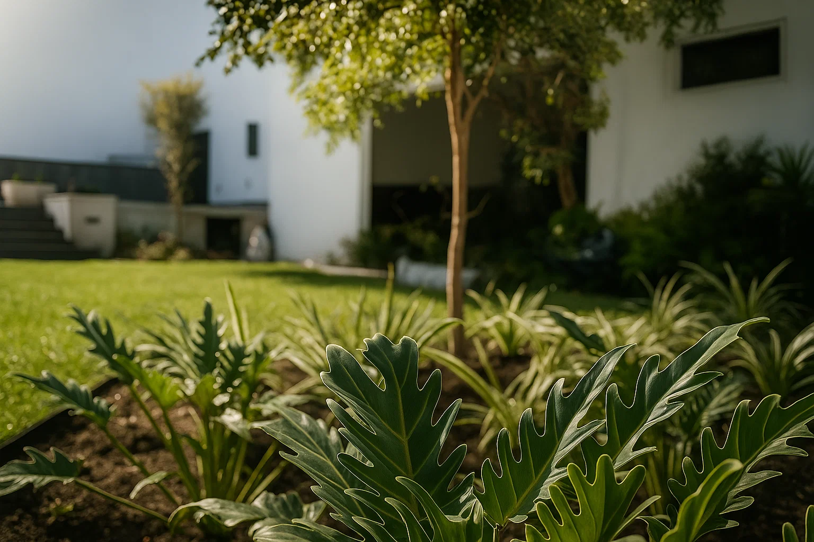
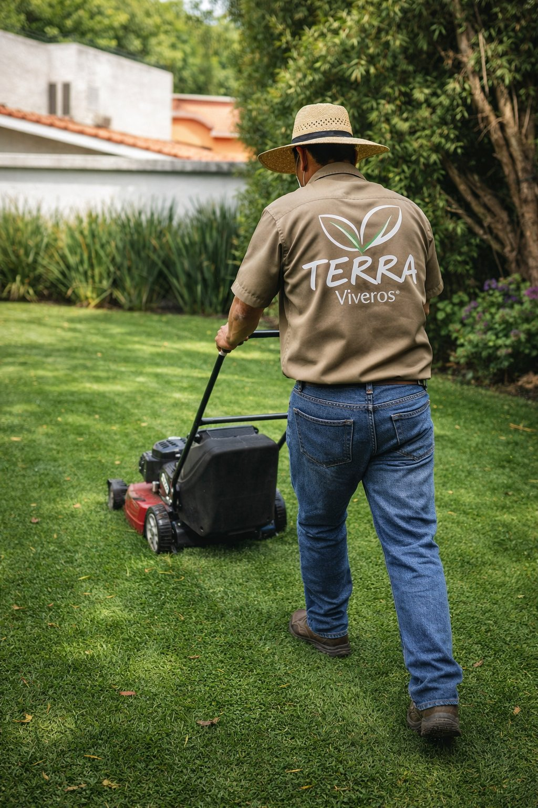

Trabajos reales
Jardines que mantenemos en Tampico





Tu jardín siempre impecable, sin que tengas que preocuparte. Poda, fertilización, control de plagas y cuidados profesionales con frecuencia adaptada a la temporada.
Contrato mensual · Factura CFDI · Sin permanencia forzada
El mantenimiento de jardines es el conjunto de servicios recurrentes que mantienen tu jardín sano y estético todo el año. Incluye poda de pasto y arbustos, fertilización, control de plagas y revisión general. En Viveros Terra trabajamos con frecuencia adaptada a la temporada: cada 15–21 días en temporada de lluvias (junio–septiembre) y cada 30 días en temporada seca. Desde $750/mes con cotización personalizada según tamaño, tipo de jardín y ubicación.
Cada visita sigue un protocolo completo para que tu jardín esté siempre en óptimas condiciones.
Corte uniforme a la altura ideal según la variedad de pasto. Para San Agustín se mantiene entre 5 y 8 cm para conservar humedad en clima caluroso.
Poda formativa y sanitaria de arbustos ornamentales, setos y plantas con técnica adecuada para cada especie. Mantenimiento estético y saludable.
Calendario de fertilización según especies, temporada y tipo de suelo. Aplicación de nutrientes específicos para que el pasto se mantenga verde todo el año.
Monitoreo y tratamiento preventivo de plagas comunes en Tampico: gusano de pasto, chinches, hormigas cortadoras, hongos por exceso de humedad.
Retiro de hojas, escombros y residuos del jardín después de cada servicio. Traslado de basura vegetal según la normativa local.
Inspección del estado del pasto, plantas y sistema de riego si existe. Reporte de cualquier problema detectado con recomendaciones.
Ajustamos la frecuencia del servicio según el ritmo de crecimiento real del jardín en Tampico.
El crecimiento del pasto y las plantas se acelera por la humedad constante y las temperaturas altas. Requiere servicio más frecuente para evitar que el jardín se descontrole.
Frecuencia recomendada
Cada 15–21 días
Menor humedad, crecimiento más lento y temperaturas moderadas. El jardín requiere menos intervenciones pero sí fertilización y monitoreo de riego para que se conserve verde.
Frecuencia recomendada
Cada 30 días
El precio exacto depende de varios factores que analizamos en una visita de diagnóstico sin costo:


"Tenemos contrato mensual desde hace más de 2 años. Vienen puntuales, el jardín siempre está impecable y me avisan cuando detectan plagas o alguna planta con problemas. Ya no tengo que estar pendiente de nada."
"Contratamos a Terra para mantener las áreas verdes de nuestra nave industrial en Altamira. Son más de 3,000 m² y desde que llegaron se nota la diferencia. Presentan reporte fotográfico de cada visita y facturan puntuales."
Envíanos las características de tu jardín. Visita de diagnóstico sin costo.
Construimos el mensaje por ti — solo envía
Visita de diagnóstico sin costo · Factura CFDI